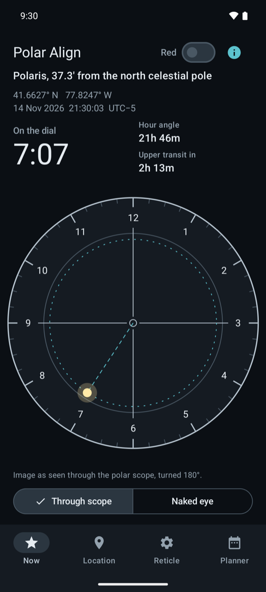
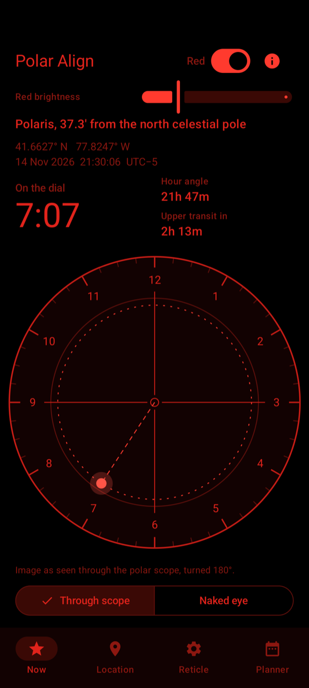
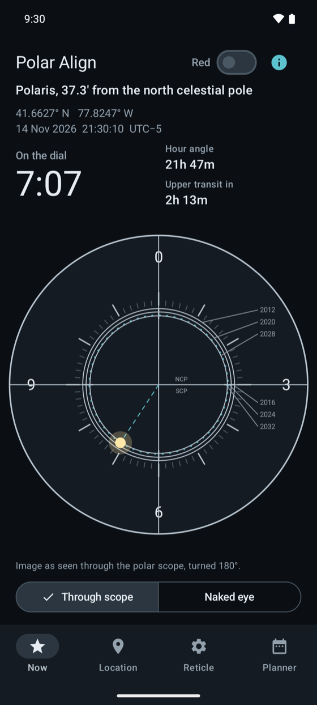
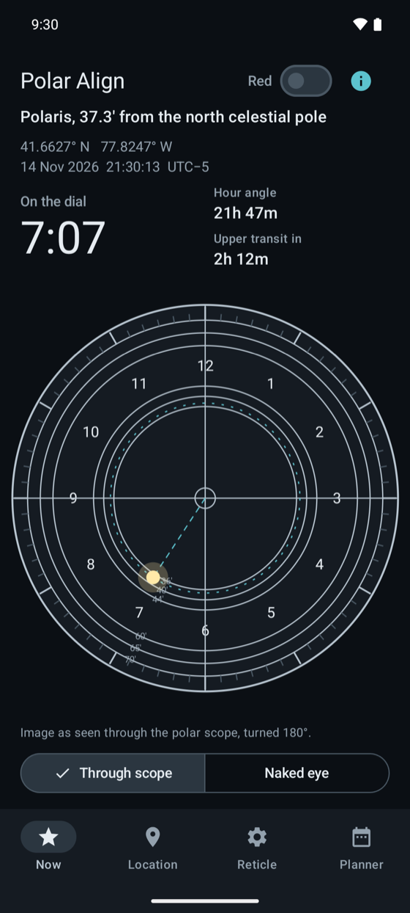
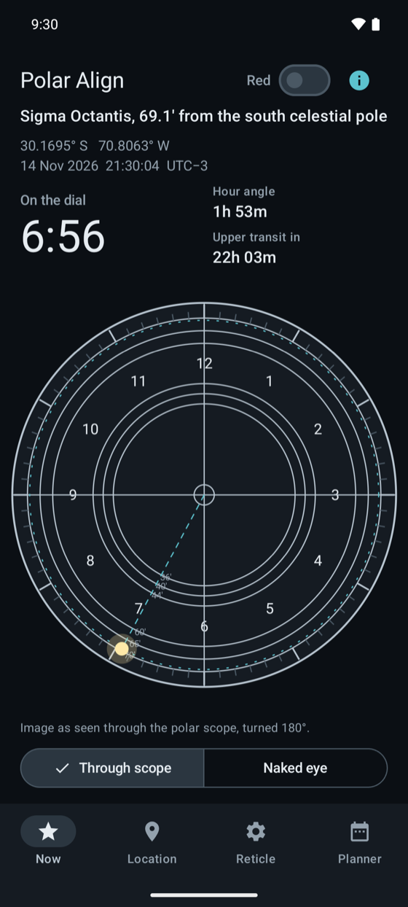

Polar Align te da la posición horaria para tu lugar y la hora actual. Lleva la estrella al punto, bloquea la montura y empieza a fotografiar.
Disponible en Google PlayAndroid. Funciona sin conexión, sin anuncios, sin cuenta.


El modo rojo oculta las barras del sistema, para que no quede nada blanco en pantalla mientras estás junto a la montura.
Escribe tu latitud y longitud, o pulsa «Usar mi ubicación una vez». La ubicación solo se lee cuando pulsas, y nunca sale de tu teléfono.
Cambia entre la vista en el buscador (girada 180°) y la vista a simple vista. Solo hay que hacer coincidir una imagen con otra, sin dar la vuelta a nada en tu cabeza.



Pro añade los retículos de Sky-Watcher, iOptron, Orion, Celestron, Explore Scientific EXOS-2, Vixen PF-L y Astro-Physics RAPAS, dibujados a partir de los manuales de los fabricantes.
Las posiciones incluyen precesión, nutación y aberración. Comparamos el ángulo horario con la biblioteca astropy, en ambos hemisferios. No se aplica la refracción atmosférica.
El retículo en esfera de reloj con la posición en vivo de la estrella.
Una compra única.
Cómo funciona un retículo y cómo leer la posición horaria, con fuentes (en inglés).
Escribe tu latitud y longitud y mira en el navegador dónde va la Polar ahora (en inglés).